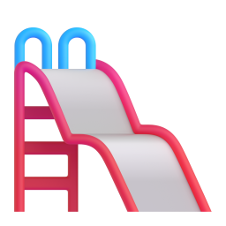
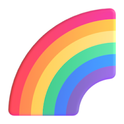

Que los encuentren
quienes los están
buscando.
Propuesta de sitio web · Septiembre 2026
Parques infantiles · Gimnasios biosaludables · Mobiliario urbano
No es un boceto.
Es el diseño completo y navegable.
Así se ve y así se recorre, pantalla por pantalla. En las siguientes láminas les cuento por qué está armado así, y qué falta para programarlo.
Así busca hoy
un cliente suyo.
- parques infantiles bogotá
- parques infantiles bogotá precios
- parques infantiles bogotá fabricantes
- parques infantiles bogotá para conjuntos
Ahí es exactamente donde vamos a trabajar: que cuando alguien escriba esto,
Balerco sea una de las opciones que aparecen.
Con quién competimos
en esa búsqueda.
Miramos quién aparece hoy de primero para entender dónde se gana rápido y dónde hay que jugar a plazo.
páginas publicadas
Tienen una página dedicada a cada producto: madera, metal, columpios, castillos, biosaludables. Google posiciona páginas, no sitios.
llevan en línea
Once años con el mismo dominio, y el nombre del dominio es justo lo que la gente escribe. La antigüedad es lo único que no se acelera.

El mapa está abierto
No publican dirección física. Ese bloque aparece por encima de todos los resultados, y ahí es donde entramos primero.
Por eso el plan no promete posiciones: arranca por donde se gana en semanas —el mapa y las búsquedas propias— y deja el terreno listo para competir por las grandes.
El sitio actual hace
bien su trabajo.
Hoy hay otro por hacer.
Se construyó para presentar las marcas aliadas —Proludic, Ropecamp, Breeze— y eso lo cumple. Lo que cambió en estos años no es el sitio: es por dónde llega el cliente.
Antes, el sitio era una carta de presentación
El cliente ya los conocía y entraba a confirmar respaldo y trayectoria.
Hoy, el sitio es la puerta de entrada
El cliente empieza en Google escribiendo lo que necesita, sin saber todavía a quién llamar.
Tres piezas que
hacen el trabajo.
Son las tres que deciden si una persona los encuentra cuando está buscando. Van incluidas desde la primera fase.

Que Google sepa qué venden
Títulos y textos armados con las palabras que la gente escribe: parques, juegos, biosaludables, Bogotá.
Ficha de negocio en el mapa
Dirección, horario y teléfono configurados para aparecer en el panel de Google con el resto de opciones.

Medición desde el día uno
Analítica instalada para saber cuánta gente entra, qué busca y por dónde llegó.
Un sitio ordenado
al revés: desde
lo que busca
el cliente.
El menú habla de necesidades: cada línea de producto con el nombre exacto con el que la gente la busca en Google.

Parques infantiles

Gimnasios biosaludables

Mobiliario urbano

Superficies de seguridad
Lo mismo que ya hacen,
contado para que los encuentren.
| Qué hacemos | Cómo queda | |
|---|---|---|
| Lo que Google lee | Reescribimos títulos y textos | Parques infantiles, juegos y mobiliario urbano en Bogotá |
| Al compartir por WhatsApp | Armamos la vista previa del enlace | Portada con marca y mensaje |
| Ficha de negocio local | Configuramos el perfil de Google | Dirección, horario y contacto en el mapa |
| Contacto desde el celular | Sumamos canales directos | WhatsApp, llamada y formulario |
| Medición de visitas | Instalamos analítica | Informe mensual de visitas y solicitudes |
| Fotos | Damos protagonismo a las obras propias | Galería con proyectos hechos por Balerco |
Qué entregamos.

El sitio
Una página completa con las cuatro líneas de producto, galería de obras propias, proceso de trabajo y formulario de contacto. Diseño propio, no plantilla.

La migración
Reemplazo del sitio actual con redirecciones de todas las direcciones existentes, para no perder el historial acumulado. Política de datos personales incluida.
La medición
Analítica, Google Search Console y perfil de Google Business configurados, para saber quién entra y desde dónde.
Las páginas de Proludic, Ropecamp y Breeze se conservan en la segunda fase.
Cuatro semanas
desde la aprobación.
Entrega de contenido y decisión sobre las marcas aliadas.
Páginas nuevas: política de datos y aliados.
Redirecciones, analítica y pruebas.
Publicación y monitoreo.
El plazo corre desde la entrega del contenido. El sitio actual se mantiene encendido dos semanas más como respaldo.
Por fases, para
publicar antes.
Fase 1 · El sitio en el aire
- Sitio completo y publicado
- Política de datos personales
- Redirecciones y migración
- Analítica y Search Console
- Dos rondas de ajustes
Fase 2 · Las marcas aliadas
- Páginas de Proludic, Ropecamp y Breeze
- Perfil de Google Business
- Tres meses de soporte
50 % al aprobar · 50 % antes de publicar. Dominio y correos ya son suyos. El alojamiento del sitio nuevo no tiene costo mensual.


Hagamos que Balerco
se vea del tamaño
de lo que construye.
Lo único que falta para arrancar: aprobar la fase 1 y pasarnos los números que quieren mostrar, las redes y el correo donde recibirán las solicitudes.
¿Arrancamos?